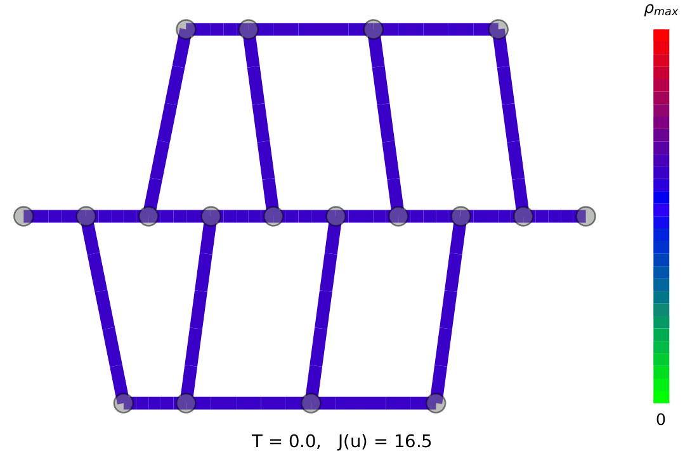

Contrôle optimal de flux sur réseaux
Thèse de doctorat, IRMA, Université de Strasbourg (2020–2023), sous la direction de Yannick Privat, co-encadrée par Emmanuel Franck et Laurent Navoret. Libérer un axe routier en un temps donné, par exemple pour laisser passer les secours, en plaçant des barrages aux entrées des routes. Travail publié dans Zeitschrift für angewandte Mathematik und Physik (2024).
Problème
En gestion de crise urbaine, il faut pouvoir dégager rapidement un itinéraire. La question se pose en contrôle optimal : sur un réseau de Nr routes, trouver la stratégie de barrages qui minimise la densité de véhicules sur un chemin χpath au temps final T, avec un nombre limité de barrages actifs simultanément (effectifs disponibles) et des barrages qui ne « clignotent » pas dans le temps.
La difficulté vient du modèle : les lois de conservation non linéaires produisent des chocs, et le couplage aux jonctions est fortement non linéaire. Le gradient du coût par rapport au contrôle est donc délicat à définir et à calculer.
Modèle
Sur chaque route [ai, bi], la densité ρi suit le modèle LWR, de flux fi(ρ) = ρ vimax(1 − ρ/ρimax), avec des conditions de Neumann en flux γiL et γiR aux deux extrémités. Aux jonctions, ces flux sont donnés par le modèle de Coclite, Garavello et Piccoli : un problème de programmation linéaire maximise le flux entrant total sous les contraintes d'offre et de demande γiR,max, γjL,max, et de répartition par la matrice stochastique AJ = (αji). On note γ = φLP(ρ) sa résolution simultanée à toutes les jonctions (jusqu'à 2 × 2, où elle est explicite).
Le contrôle u = (ui), à valeurs dans [0, 1], pondère la capacité d'accueil de chaque route sortante : la contrainte devient γjL ≤ (1 − uj) γjL,max. Physiquement, uj est un barrage à l'entrée de la route j. Pour que le trafic se reporte sur les routes ouvertes au lieu de bloquer toute la jonction, les coefficients αji(u) dépendent eux aussi du contrôle. D'où γ = φLP(ρ, u), régularisée en une fonction C1.
Le modèle est semi-discrétisé en espace par volumes finis d'ordre 1 (Nc mailles par route, flux de Lax-Friedrichs local), ce qui donne le système différentiel
ρ′ = fFV(ρ, γ), γ = φLP(ρ, u), ρ(0) = ρ0
intégré en temps par Euler explicite.
Méthode
On résout infu ∈ Uad Jθ(u), avec
Jθ(u) = CT(u) + θS S(u) + θB B(u)
où CT(u) = c · ρ(T; u) mesure la densité restante sur le chemin, S pénalise le dépassement de Nmax barrages actifs et B est la variation totale du contrôle en temps, lissée en Bν. L'existence d'un contrôle optimal est démontrée pour θB > 0, et les conditions d'optimalité se réécrivent en une seule équation Λ = 0.
Le gradient est obtenu par méthode adjointe semi-discrète : ∇CT = N⊤p, où l'état adjoint résout p′ + M⊤p = 0, p(T) = c. Les matrices M et N assemblent les jacobiennes de fFV et φLP, calculées par différentiation automatique.
Trois algorithmes sont comparés : la descente de gradient projetée (GD), avec un pas décroissant inspiré des schedulers de deep learning ; une méthode de point fixe (FP) tirée directement des conditions d'optimalité, qui ne regarde que le signe du gradient et permet des sauts globaux ; et un hybride GDFP qui insère des pas FP espacés dans la descente pour sortir des minima locaux. Les contraintes S et Bν sont traitées par pénalisation, avec une continuation : θS et θB partent de 10−8 et sont augmentés une fois proche d'un bassin d'attraction.
Résultats
Cas test le plus complet : un réseau de trois voies parallèles reliées entre elles, dont on veut vider la voie centrale (routes 4, 6, 7, 8, 9) en T = 30, avec Nmax = 5.
Sur ce cas, le pas de point fixe débloque la convergence là où la descente de gradient stagnait, et divise la pénalité S par plus de dix sans dégrader CT. Les contrôles obtenus sont presque bang-bang (0 ou 1), ce qui les rend applicables en pratique.

Bilan et perspectives
La chaîne complète, d'une question opérationnelle à un outil qui tourne : formalisation, analyse mathématique (existence, conditions d'optimalité), conception d'un algorithme adapté aux défauts du gradient sur ce problème, et code ouvert pour reproduire les résultats.
Les jacobiennes sont calculées avec ForwardDiff.jl, en mode direct : le coût croît avec la dimension Nr × Nc de l'état, et c'est le goulot d'étranglement du code sur les gros réseaux. Le chapitre 3 de la thèse détaille ces limites (empreinte mémoire, stabilité de type, précision de la différentiation). Une piste naturelle est la différentiation en mode inverse compilée, du type JAX (jit, vjp), qui calcule directement le produit N⊤p sans assembler les jacobiennes.
Outils
Julia, ForwardDiff.jl, Graphs.jl, PreallocationTools.jl, MultiFloats.jl, Plots.jl
Liens
Code TRoN.jl (GitHub) Article (ZAMP, 2024) Preprint (arXiv) Manuscrit de thèse Ma thèse en 180 secondes